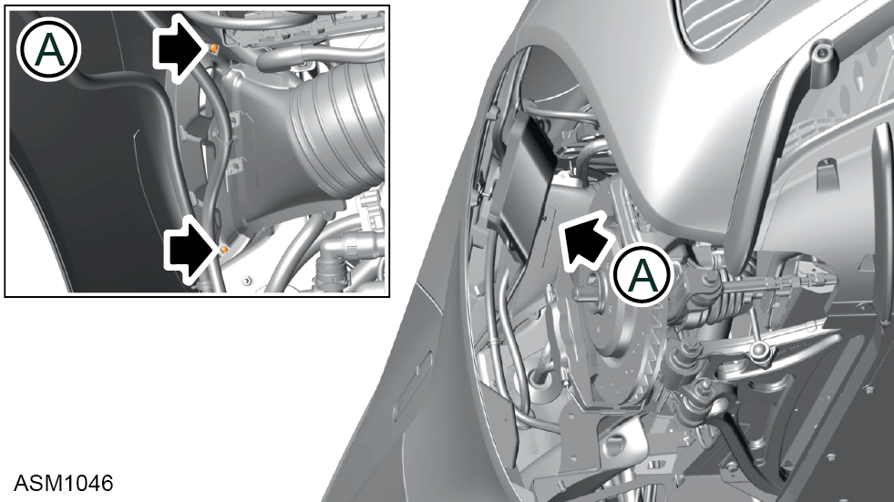
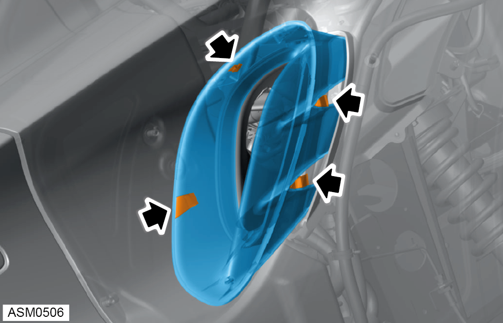

Snorkel / Ducting Air Intake - V6
Print
Operation Code: 42.01.03-02
Removal
- Remove airbox assembly. Refer to procedure.
- Remove rear wheel arch liner left side. Refer to procedure.

- Remove M4x8 self tapping screws (x2) securing side vent grill to rear fender.
- Disengage and remove cold air intake hose from intake duct.
- Remove M4x8 self tapping screws (x2) securing side vent grill to rear fender.

- Disengage clips (x4) and remove side vent grille from rear fender.
- Remove M6x16 bolts (x2) securing intake duct to bracket.
- Remove outer intake duct moulding.
- Remove M4x8 self tapping screw securing side vent grille to vehicle.
- Remove M6 nut securing intake duct to vehicle.
- Remove intake duct.
Installation
- Installation is the reverse of removal procedure.